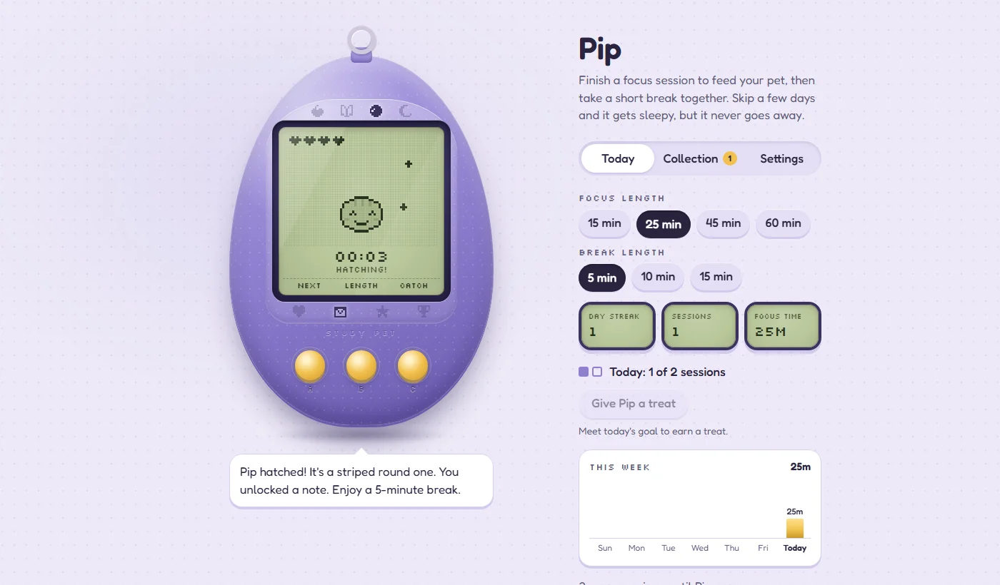

Study Pet
A virtual pet that grows when you finish focused study sessions. It installs like an app, works offline, and keeps every byte of your progress on your own device.

Overview
Study Pet wraps a Pomodoro timer in a handheld virtual pet. Each finished focus session feeds the pet and moves it toward its next growth stage; twenty sessions raise it to a grown-up, which unseals a printable certificate and moves the pet into an Album so a new egg can start. Along the way there are unlockable notes, lifetime stickers, treats for meeting a daily goal, holiday outfits and collectible device shells.
It is a plain, framework-free web app: ES modules, a canvas renderer for the LCD screen, and a small build script that bundles everything into a single installable index.html. There are no runtime dependencies.
The Problem
Focus timers work, but they are easy to stop opening. Streak apps try to fix that with guilt: miss a day and you lose everything. I wanted the opposite, a reason to come back that rewards consistency without punishing a bad week. So the pet gets sleepy if you skip a few days, but it never goes away.
There was also a privacy goal. A study companion learns a lot about someone's habits, and I didn't want any of that sitting on a server.
Architecture & Approach
The pet's rules live in a pure engine module (engine.js) with no screen code at all: hearts, growth stages, streaks, breaks, treats, unlocks and backups are all functions from state to state. That made the rules easy to test exhaustively and kept the 1,100-line UI layer focused on wiring and drawing.
Every pet is generated from a random seed that picks its shape, markings, ears, tail and topper, revealed one stage at a time. Study habits can override the later traits as they arrive, so the pet ends up reflecting how you actually studied:
Because there is no backend, a few features needed creative plumbing:
- Moving devices. The whole save is serialized, compressed with the browser's built-in
CompressionStream(deflate-raw), and packed into a link. A hand-written QR encoder (byte mode, versions 1 to 40) turns that link into a code the other device can scan. - Invite links. A friend's invite can carry a welcome message, notes, an accessory and a sealed certificate message. All of it rides after the
#in the URL, which browsers never send to a server. - Offline and installable. A service worker caches the app and its fonts, and the manifest lets it install on desktop, Android and iOS home screens.
- Swappable storage. Saving sits behind a two-method
load()/save()interface, so a synced backend could replacelocalStoragewithout touching the rest of the app.
Testing & Delivery
The engine, holiday dates and move links are covered by about 80 tests on Node's built-in test runner; the QR tests decode every generated code back with jsQR to prove it scans. On top of that, around 70 Playwright browser tests drive the built app at both desktop and phone sizes. GitHub Actions runs everything on each pull request, and a push to main only publishes to GitHub Pages if the checks pass.
Results
The app is live, installable, and in maintenance mode. It went from first commit to a polished release in under two weeks, built through a series of reviewed pull requests: the core engine and renderer, goals and habits, a hardware-style device redesign, holidays and stickers, adjustable breaks, a full UI audit, and finally the collectible shells.
What I'd Do Differently
- Split
ui.jsinto smaller per-panel modules earlier. It grew to over a thousand lines because every new feature needed a little wiring there. - Add an optional synced store behind the existing storage interface, so progress follows you between devices without a move link.